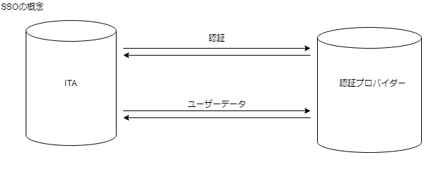

ITA_システム構成/環境構築ガイド
SSO(シングルサインオン)編
－第1.9版－
Copyright © NEC Corporation 2020. All rights reserved.
免責事項
本書の内容はすべて日本電気株式会社が所有する著作権に保護されています。
本書の内容の一部または全部を無断で転載および複写することは禁止されています。
本書の内容は将来予告なしに変更することがあります。
日本電気株式会社は、本書の技術的もしくは編集上の間違い、欠落について、一切責任を負いません。
日本電気株式会社は、本書の内容に関し、その正確性、有用性、確実性その他いかなる保証もいたしません。
商標
- LinuxはLinus
Torvalds氏の米国およびその他の国における登録商標または商標です。
- Red Hatは、Red Hat,
Inc.の米国およびその他の国における登録商標または商標です。
- Apache、Apache Tomcat、Tomcatは、Apache Software
Foundationの登録商標または商標です。
- Oracle、MySQLは、Oracle Corporation
およびその子会社、関連会社の米国およびその他の国における登録商標です。
MariaDBは、MariaDB Foundationの登録商標または商標です。
Ansibleは、Red Hat, Inc.の登録商標または商標です。
- Active Directoryは、米国Microsoft
Corporationの米国およびその他の国における登録商標または商標です。
その他、本書に記載のシステム名、会社名、製品名は、各社の登録商標もしくは商標です。
なお、® マーク、TMマークは本書に明記しておりません。
※本書では「Exastro IT Automation」を「ITA」として記載します。
目次¶
はじめに¶
本書では、ITAでシングルサインオン認証（以下、「SSO認証」）機能を利用頂く為に必要なシステム構成について説明します。
SSO認証機能を利用するにあたっては、ITA基本機能が構築済であることが前提です。ITA基本機能の構築に関しては、「システム構成／環境構築ガイド_基本編」をご覧ください。
機能¶
SSO認証機能は、以下の機能を提供します。
表 1‑1 機能名
N o |
機能名 |
概要 |
WEB コ ンテ ンツ |
Ba ckYard コン テンツ |
|---|---|---|---|---|
1 |
SSO 認証機能 |
外部認証プロバイダ ーを使用してITAの認証を行います。 |
○ |
― |
システム構成¶
{kind=link}
システム要件¶
SSO認証機能はITAシステムのシステム要件に準拠するため、「システム構成／環境構築ガイド_基本編」を参照してください。
SSO認証機能を利用するには、ITAシステムがインストールされているシステム及び利用者のクライアントデバイスがSSO認証プロバイダーとHTTP/HTTPS通信可能であることが必要です。
ITAシステム側のHTTP/HTTPS通信は直接またはPROXYを使用しての通信をサポートしております。ただし認証が必要なPROXYはサポートしておりません。
利用者のクライアント側のHTTP/HTTPS通信はSSO認証プロバイダーにSSO認証とは関係なく正常に認証できることが必要です。
ITAでサポートしているSSO認証方式¶
No |
ITA上の認証方式名 |
概要 |
|---|---|---|
1 |
OAuth2 |
OAuth version2.0 |
設定フロー¶
認証プロバイダーへのクライアント登録
利用したい認証プロバイダーを利用するためにITAでサポートされている認証方法に必要なクライアント登録を行い認証に必要な情報を取得します。
No |
認証方式 |
認証に必要な情報 |
|---|---|---|
1 |
OAuth2 |
・clientId ・clinentSecret |
プロバイダーに設定するコールバックURL(またはリダイレクトURL)は以下を設定してください。
N o |
認証方式 |
コールバックURL(リダイレクトURL) |
|---|---|---|
1 |
oauth2 |
https//(ITAの FQDN)/common/common_sso_auth.php?oauth2&callback |
※ITAの設定がhttp(非SSL)の場合はコールバックURLもhttp://・・としてください(非推奨)
ITAのSSO基本情報の登録
メインメニュー >> 管理コンソール >> SSO基本情報管理
主にログイン画面への表示情報と認証方法を設定します。
N o |
項目名 |
設定内容 |
必 須 |
備考 |
|---|---|---|---|---|
1 |
プ ロバイ ダーID |
自動採番 |
○ |
|
2 |
プ ロバイ ダー名 |
プロバイダー名 |
〇 |
ログイン 画面に表示するプロバイダー名 |
3 |
認 証方式 |
認証方式を選択 |
〇 |
OAuth2のみ |
4 |
ロゴ |
画像ファイル をアップロード |
ログイン画面 に表示するプロバイダーのロゴ |
|
5 |
表示 フラグ |
ログイン画面 への表示フラグ |
〇 |
選択肢：表示 or 非表示 ※認証に必要な情報が不足 している場合は表示されません 「④ログイン 画面への表示について」を参照 |
ITAのSSO属性情報の登録
メインメニュー >> 管理コンソール >> SSO属性情報管理
主に認証設定とプロバイダーからのユーザー情報取得に関する設定します。
N o |
項目名 |
設定内容 |
必 須 |
備考 |
|---|---|---|---|---|
1 |
属性ID |
自動採番 |
○ |
|
2 |
プ ロバイ ダー名 |
プロバイダー名 |
〇 |
「SSO基 本情報管理」に登録済みのプロ バイダーをプルダウンから選択 |
3 |
設 定項目 |
設定項目 |
〇 |
設定する 項目をプルダウンから選択する ※設定項目は 下記の「設定項目一覧」を参照 |
4 |
設定値 |
設定値 |
設定項目に対する設定値 |
※プロバイダーと設定項目は重複登録できません。
設定項目一覧
認証 方式 |
項目名 |
設定内容 |
必 須 |
備考 |
|---|---|---|---|---|
O Auth2 |
clientId |
認証 クライアント識別子 |
○ |
認証 プロバイダーから払出 された値を設定します |
cl ientSecret |
認証クライ アントシークレット |
〇 |
認証 プロバイダーから払出 された値を設定します |
|
author izationUri |
ユーザー 認証エンドポイント |
〇 |
認証プロ バイダーの仕様を確認 して設定してください |
|
acce ssTokenUri |
accessToken 取得エンドポイント |
〇 |
認証プロ バイダーの仕様を確認 して設定してください |
|
resour ceOwnerUri |
ユーザー情報 取得エンドポイント |
〇 |
認証プロ バイダーの仕様を確認 して設定してください |
|
scope |
ユーザー情 報の開示(取得)範囲 |
認証プロ バイダーの仕様を確認 して設定してください |
||
id |
ユーザーIDキー名 |
〇 |
resour ceOwnerUriで取得する ユー ザーデータ内のキー名 |
|
name |
ユーザー名キー名 |
〇 |
resour ceOwnerUriで取得する ユー ザーデータ内のキー名 |
|
ユーザーメ ールアドレスキー名 |
resour ceOwnerUriで取得する ユー ザーデータ内のキー名 |
|||
imageUrl |
ユー ザー画像URLキー名 |
resourceOw nerUriで取得するユー ザーデータ内のキー名 ※キーが配 列になっている場合は “>”で区切る |
||
ignor eSslVerify |
SSL証 明書確認オプション |
SSLサー バー証明書検証の有無 デフォルト ではSSLサーバー証明 書の検証を行います。 ※ ”1”を設定することでS SLサーバー証明書の検 証がOFFになります。 |
||
そ の他 |
proxy |
外部と通信する際 のproxyを指定する |
tcp://(ホスト名 or IPア ドレス):(ポート番号) または http://(ホスト名 or IPア ドレス):(ポート番号) |
|
そ の他 |
debug |
デバッグフラグ |
SSOログイン 失敗時に失敗時の詳細 情報を画面に表示する ※”1”を設 定することでデバッグ フラグがonになります |
ログイン画面への表示について
ログイン画面には表示せずに設定内容が正しいのかを確認する方法
ログイン画面に表示してしまうと設定が正しいのかわからない状態でもログイン操作がされてしまいます。
ログイン可能なのかを最終確認してから「②ITAのSSO基本情報」の「表示フラグ」を「表示」に設定することを推奨します。
ログイン画面への表示フラグを「非表示」としている場合は下記URLを直接ブラウザに入力することで動作検証することができます。
N o |
認 証方式 |
動作確認URL |
|---|---|---|
1 |
oauth2 |
https://(ITAのFQDN)/common/c ommon_sso_auth.php?oauth2&providerId=(プロバイダーID) ※プロバイダーIDは「SSO基本情報管理」メニューの項目 |
ロールについて¶
SSO認証されたユーザーはITAユーザーとして自動作成されます。
また、初回ログイン時にSSOデフォルトロール(ロールID:2100000001)に自動的に紐づけされます。
※割り当ては初回のみです。
このロールには初期状態ではどのメニューにも紐づいていないため必ず事前に適切なメニューと紐づけを行ってください。紐づけは
メインメニュー >> 管理コンソール >> ロール・メニュー紐付管理
で設定可能です。
ログイン画面¶
上記の設定フローを完了してログイン画面への表示フラグを「表示」と設定したらログイン画面の下部に表示されます。
このプロバイダーをクリックすることでSSO認証が実施されます。
「SSO基本情報管理」でロゴを登録していた場合はプロバイダー名の前にロゴが表示される。

ログイン後の画面¶
SSOでログイン後は右上のログインユーザー情報にSSOプロバイダー情報が表示されます。
「SSO基本情報管理」でロゴを登録していた場合ロゴが表示されます。登録していない場合はプロバイダー名が表示されます。
「SSO属性情報管理」で「iimageUrl」(ユーザー画像URL)を登録していてプロバイダーから取得できた場合はユーザーの画像がプロバイダー情報の右側に表示します。

プロバイダーロゴを登録している、ユーザー画像を取得できた場合

プロバイダーロゴを登録していない、ユーザー画像を取得しない場合
SSO認証ユーザーの管理について¶
SSO認証ユーザーは名前、メールアドレスは認証プロバイダーで設定されたものをそのまま使用します。
ITAの管理画面で変更することは可能ですが、次回ログインしたときに自動的にプロバイダーから取得した最新の情報で再設定されます。
なお、ログインIDについてはITAのユーザー管理で再設定した場合その後再変更されることはありません。
また、ITAの管理画面でユーザーの廃止を行ったとしてもそのユーザーがプロバイダー側でログイン可能であればITAにログイン時に自動的に復活します。ただし、SSOデフォルトロールへの紐付は行われません。
特定ユーザーを利用させたくない場合はプロバイダー側でユーザー削除またはログインできないようにするか、ITA側でロールに割り当てないことでITAの利用を制限してください。
AD(ActiveDirectory)との併用について¶
SSO認証とAD認証は併用可能です。
通常ITAでAD認証を有効にしている場合はシステム管理者(ユーザーID:1)およびシステム管理者ロール(ロールID:1)以外のユーザーおよびロールはActiveDirectory設定ファイルに記載していない場合自動的に廃止されますが、SSO認証ユーザー(認証方式:sso)およびSSOデフォルトロール(ロールID：2100000001)は廃止されません。
リバースPROXY環境においての注意点¶
※リバースPROXYを利用していない場合、本項の問題は生じません。
ユーザーがITAにアクセスする際に負荷分散等のためにリバースPROXYを利用している場合、SSO認証において以下に該当する場合にリバースPROXYサーバーへの追加設定が必要になります。
HTTPSを使用していない。(クライアント(ブラウザ)⇔リバースPROXYサーバー間)
AWSのELB(ALB,CLB)を利用していない。
※AWSのELB(ALB、CLB)ではこの問題は発生しません。
リバースPROXY⇒ITAサーバー間でリクエスト元プロトコル情報のヘッダー
(X_FORWARDED_PROTO）を送信していない。
上記全ての条件を満たす場合、SSO認証のフローの際に元のプロトコルではないプロトコルに代わってしまう可能性があります。また、切り替わる際にどちらか片方のみで運用していた場合はその時点でエラーが発生してしまいます。
apacheなどのオープンソースソフトウェアでのリバースPROXYを行うことは可能ですが、標準でリクエスト元のプロトコル情報を送っていない場合があります。
下記にapacheでのリバースPROXYでの追加ヘッダーの設定例を示します。
※その他の場合については割愛させていただきます。
アクセスするURL: http://example.com
リバースPROXYするURL: http://192.168.100.1
<VirtualHost *:80> ServerName example.com ErrorLog (省略) CustomLog (省略) ProxyRequests Off ProxyPass / http://192.168.100.1/ ProxyPassReverse / http://192.168.100.1/ RequestHeader set X-Forwarded-Proto http </VirtualHost> |
|---|
※下線の行の設定を追加してください。